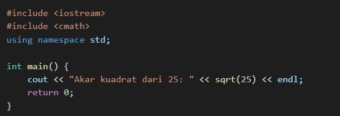

1. Pengertian Fungsi dan Prosedur
Fungsi dan prosedur adalah blok kode yang digunakan untuk menjalankan tugas tertentu dalam sebuah program. Dalam C++, istilah yang lebih umum digunakan adalah fungsi, sedangkan istilah prosedur merujuk pada fungsi yang tidak mengembalikan nilai (void function).
2. Manfaat Penggunaan Fungsi dan Prosedur
- Memecah program menjadi bagian yang lebih kecil dan mudah dikelola.
- Mengurangi duplikasi kode.
- Meningkatkan keterbacaan dan pemeliharaan program.
- Mempermudah debugging dan pengujian kode.
3. Jenis Fungsi dalam C++
a. Fungsi dengan Nilai Kembalian
Fungsi ini mengembalikan suatu nilai dengan menggunakan keyword return.
b. Fungsi tanpa Nilai Kembalian (Prosedur)
Fungsi ini tidak mengembalikan nilai dan menggunakan void sebagai tipe data.
4. Parameter dalam Fungsi
a. Parameter dengan Nilai
Parameter yang dikirim ke fungsi hanya sebagai salinan, sehingga perubahan dalam fungsi tidak mempengaruhi nilai aslinya.
b. Parameter dengan Referensi
Menggunakan referensi agar perubahan dalam fungsi juga mempengaruhi nilai asli.

c. Parameter dengan Pointer
Menggunakan pointer untuk melewatkan alamat variabel.
5. Fungsi Rekursif
Fungsi rekursif adalah fungsi yang memanggil dirinya sendiri untuk menyelesaikan suatu masalah.
6. Fungsi dalam Library Standar C++
C++ memiliki banyak fungsi bawaan dalam pustaka standar, seperti:
- sqrt(x): menghitung akar kuadrat.
- pow(x, y): menghitung x pangkat y.
- abs(x): mengembalikan nilai mutlak.
Contoh penggunaan:
